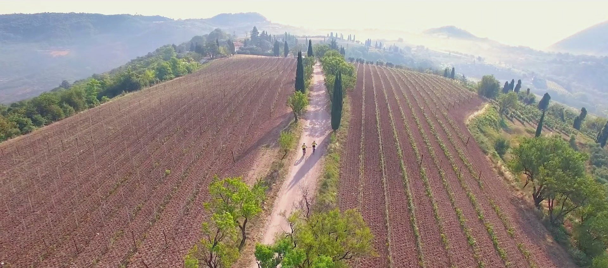
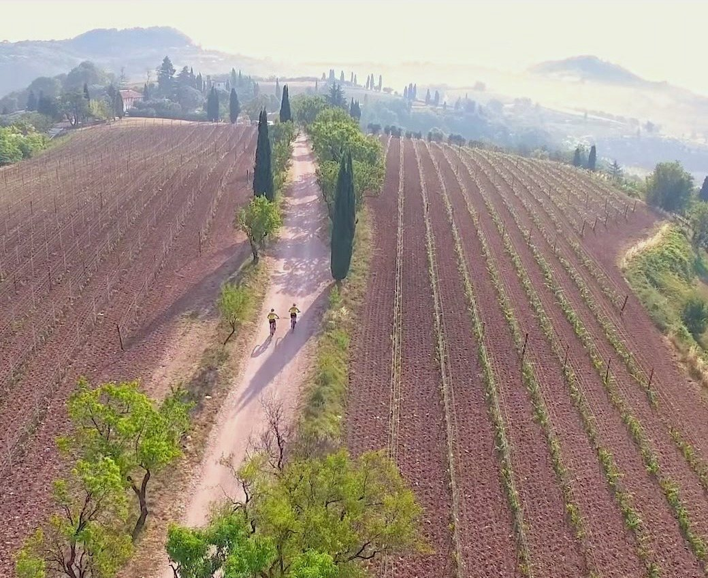
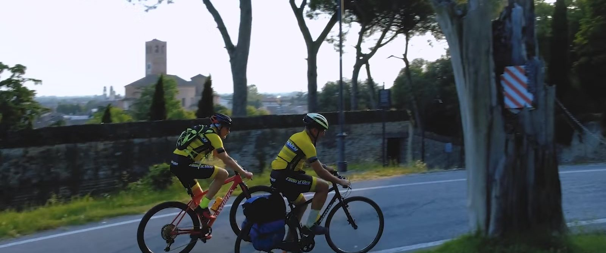
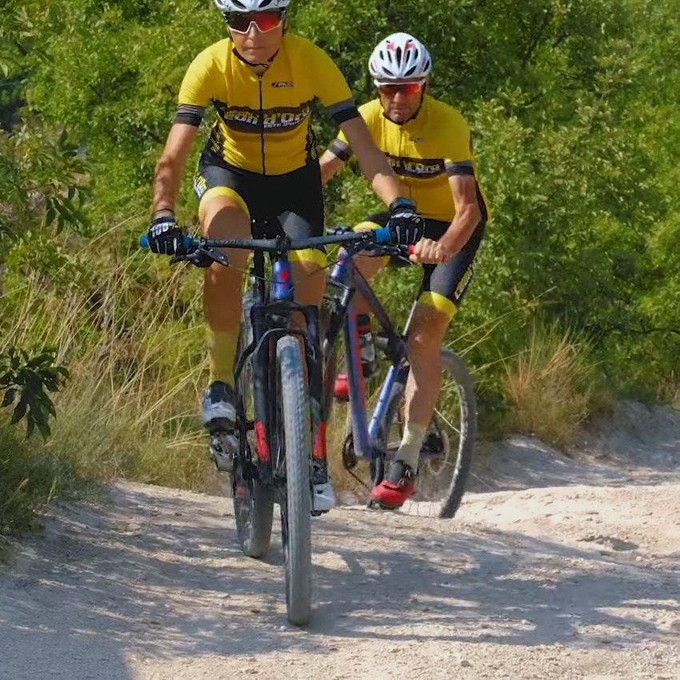

Bike hotel
Este è ai piedi dei Colli Euganei: si parte dall’albergo, in bici da strada o in mountain bike, e la sera la bici dorme nel garage.


Este è ai piedi dei Colli Euganei: si parte dall’albergo, in bici da strada o in mountain bike, e la sera la bici dorme nel garage.

Per chi va piano c’è la ciclovia E2, l’anello che gira attorno ai Colli Euganei passando per i paesi: 70 km, e Este è sul percorso.
Per la mountain bike c’è la Transeuganea, 60 km nella natura dei Colli Euganei, e molti altri sentieri.
Il Leon d’Oro collabora da anni con il Team Este Bike e aiuta a organizzare le sue uscite in mountain bike e in bici da strada: il ritrovo è in piazza, alle 8.30 d’estate e alle 9 d’inverno. Al banco vi diamo consigli e indicazioni per i giri dei Colli.
Con la colazione, la singola costa 50 € e la doppia 75 €; le bici restano nel garage privato dell’albergo.
